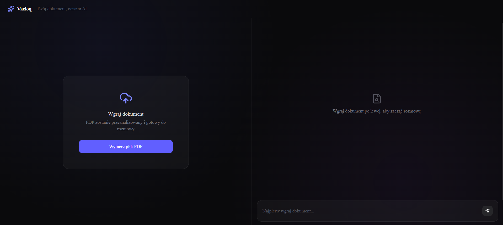
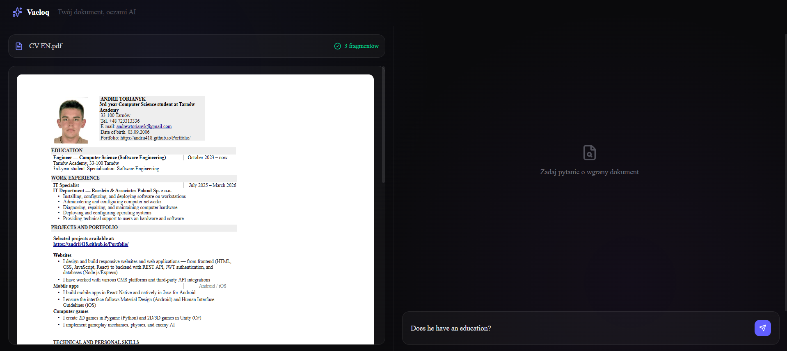
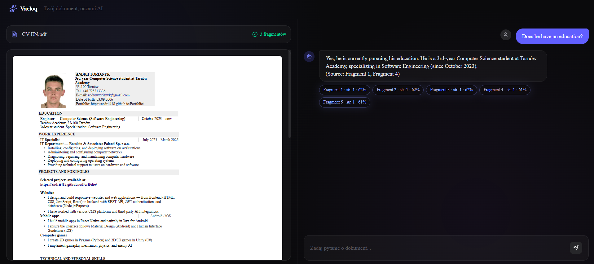
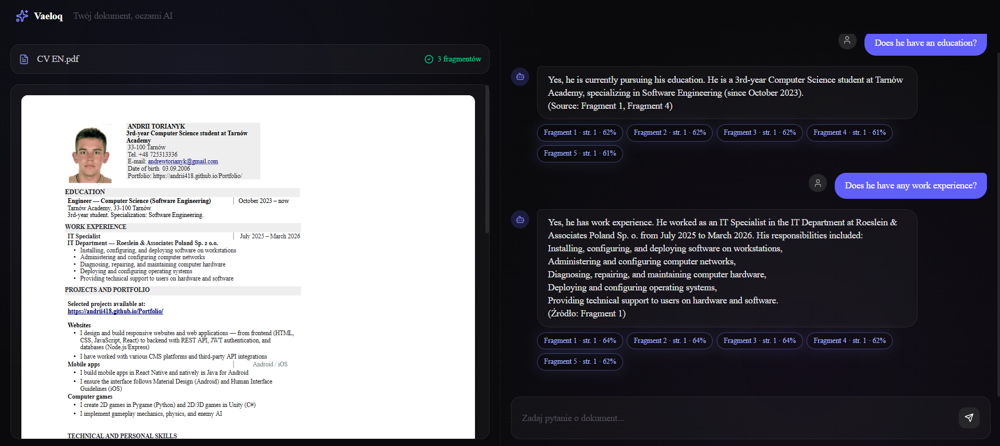

Vaeloq
Aplikacja Next.js realizująca pełny pipeline RAG — wgrywasz PDF, system tnie go na fragmenty, indeksuje jako wektory w pgvector i odpowiada na pytania, osadzając odpowiedź w konkretnych cytatach ze źródła.
Aplikacja w akcji




Dokument,
z którym można rozmawiać
Vaeloq zamienia statyczny PDF w źródło, które można odpytywać w języku naturalnym. Zamiast przeszukiwać dokument ręcznie, użytkownik zadaje pytanie, a model generuje odpowiedź opartą wyłącznie na fragmentach faktycznie obecnych w treści.
Każda odpowiedź jest strumieniowana na żywo i osadzona w konkretnych fragmentach źródłowych wraz z numerem strony i procentowym dopasowaniem — dzięki czemu można zweryfikować, skąd pochodzi informacja.
Stack technologiczny
Pipeline RAG krok po kroku
document-panel.tsx wysyła plik PDF do API route
app/api/process-document.
POST /api/process-document Content-Type: multipart/form-data
lib/document-processor.ts wyciąga tekst przez pdf-parse
i dzieli dokument na logiczne fragmenty.
const chunks =
chunkText(rawText, {
maxTokens: 500
});
lib/embeddings.ts wysyła każdy fragment do modelu
Gemini i otrzymuje wektor reprezentujący jego treść.
const vector = await embedChunk(chunk.text);
lib/supabase.ts zapisuje fragmenty i wektory
w tabeli Postgres z rozszerzeniem pgvector.
insert into chunks (content, embedding, page) values ($1, $2, $3);
API chat zamienia pytanie na wektor i pobiera
najbardziej podobne fragmenty (cosine similarity).
order by embedding <=> $1 limit 5;
Fragmenty + pytanie trafiają do Gemini, a odpowiedź jest
strumieniowana do chat-panel.tsx wraz z cytatami.
for await (const part of stream) send(part.text);
Co warto wiedzieć
Jak uruchomić
git clone https://github.com/Andrii418/vaeloq cd vaeloq npm install
GEMINI_API_KEY=your_gemini_api_key NEXT_PUBLIC_SUPABASE_URL=your_supabase_project_url NEXT_PUBLIC_SUPABASE_ANON_KEY=your_supabase_publishable_key SUPABASE_SERVICE_ROLE_KEY=your_supabase_secret_key
-- w SQL Editorze Supabase -- uruchom supabase/schema.sql -- (tworzy tabelę fragmentów + rozszerzenie pgvector)
npm run dev # otwórz http://localhost:3000